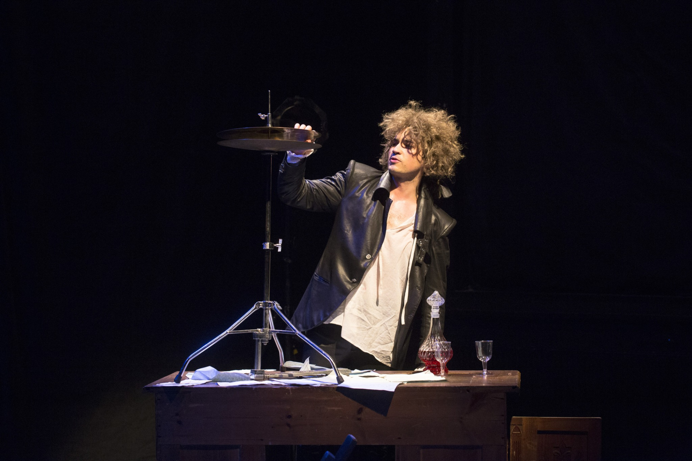
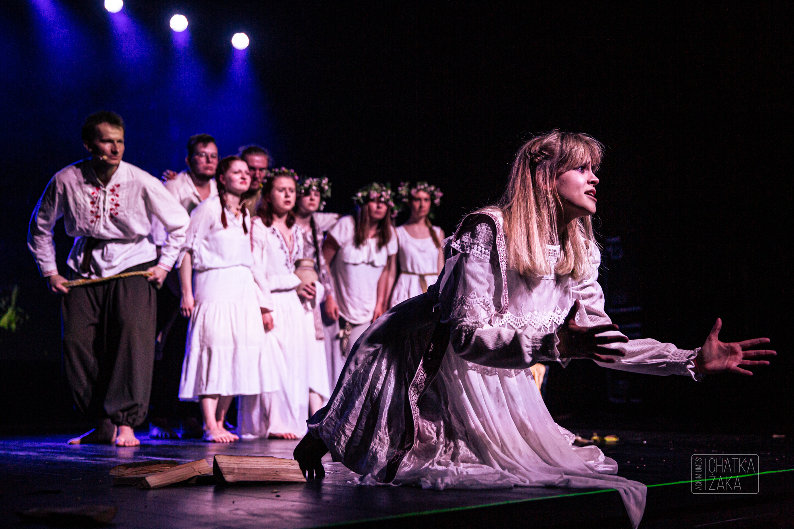
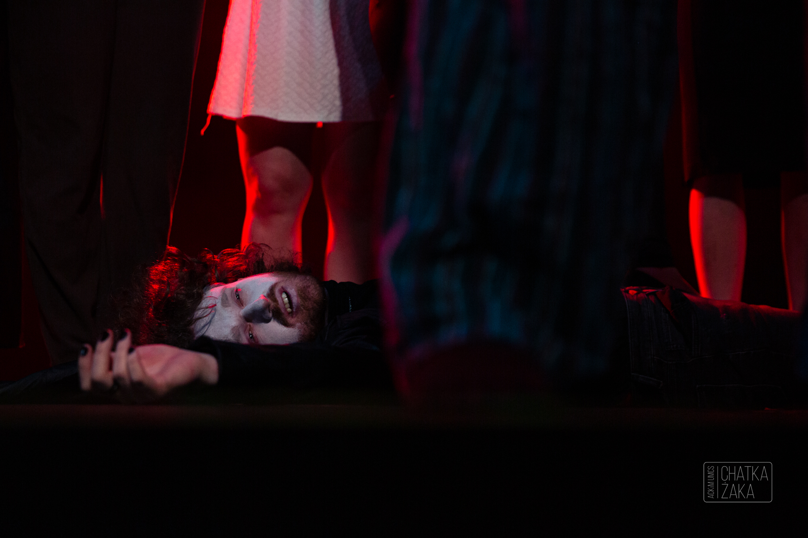
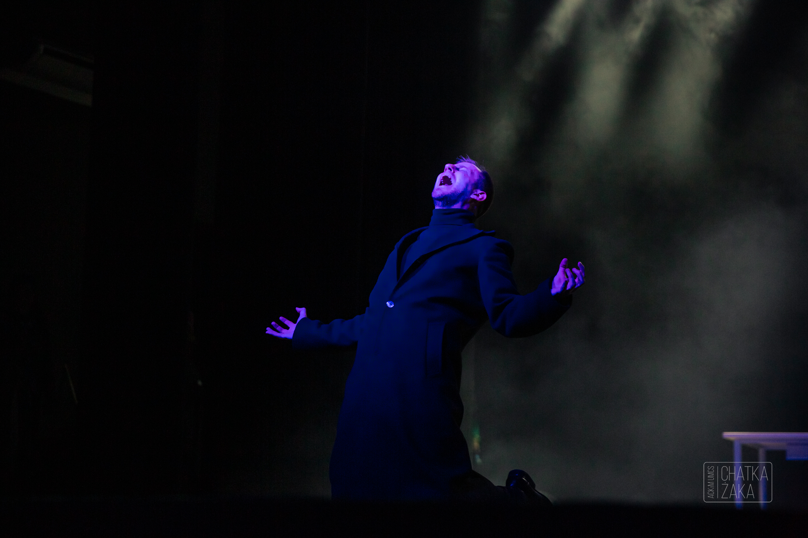

Marzec 14, 2023
Być jak Młody W.
Teatr Boto
Reżyseria i Scenariusz: Mariusz Babicki
Wykonanie: James Malcolm
Premiera: 12 Maja 2017 | Lubuski Teatr w Zielonej Górze
Marzec 20, 2023
Szymborska: kolaż
Uniwersytet Gdański
Opieka: Piotr Biedroń
Dramaturgia: Barbara Madany
Premiera: 20 Marca 2023 | Uniwersytet Gdański

Maj 25, 2023
Rusałki
Chatka Żaka
Reżyseria: Ekaterina Sharapova, Bogdan Bracha Wykonawcy: Teatr Imperialny
Premiera: 20 Grudnia 2022 | Chatka Żaka

Maj 26, 2023
Balladyna '68
Chatka Żaka
Reżyseria: Aleksandra Skorupa
Wykonawcy: Teatr Kurtyna
Premiera: 21 Listopada 2022 | Klub Akademicki ARKA

Maj 26, 2023
ΑΝΑΓΚΗ: przeznaczenie
Chatka Żaka
Reżyseria: Marcin Zieniewicz
Wykonawcy: Teatr bez Nazwy
Premiera: 13 Grudnia 2022 | Uniwersyteckie Centrum Kultury
Maj 27, 2023
Szklana Menażeria
Chatka Żaka
Reżyseria: ks. Mariusz Lach
Wykonawcy: Teatr ITP
Premiera: 28 Kwietnia 2023 | Katolicki Uniwersytet Lubelski
Maj 27, 2023
Nana na nana
Chatka Żaka
Wykonawcy: Musical Cyrkowy Chatki Żaka we
we współpracy z Fundacją Sztukmistrze
Premiera: 19 Maja 2023 | Chatka Żaka
Czerwiec 3, 2023
Atlas wysp odległych
Teatr Miniatura
Reżyseria: Marek Zákostelecký
Przekład: Tomasz Ososiński
Premiera: 18 Marca 2023 | Teatr Miniatura
Dodatkowe Informacje
Źródła zdjęć i inne konieczności.